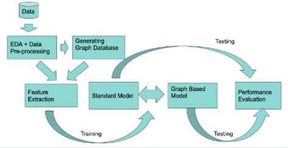

Academic Background
Master of Computer Science
Arizona State University - CGPA - 4/4 (Till Date)
Expected Graduation : May 2024

I am currently pursuing a Master of Computer Science (MCS) at Arizona State University, with an expected graduation date in May 2024. This program has provided me with in-depth knowledge in various computer science domains, allowing me to enhance my skills and expertise in the field.
Relevant Coursework
- Introduction to Human Computer Interaction
- Foundations Of Algorithms
- Mobile Computing
- Knowledge Representaion
- Software Verification, Validation and testing
- Semantic Web Mining
- Information Assurance and Security
- Foundations Of Machine Learning
- Data Processing at Scale
Computer Science and Engineering
Specialised in Artificial Intellegence
Koneru Lakshmaiah University - CGPA - 8.7/10

During my undergraduate studies at KL University, Vijayawada, I specialized in Computer Science and Engineering with a focus on Artificial Intelligence, achieving distinction with a CGPA of 8.7/10. KL University's exceptional campus, equipped with top-notch facilities provided an ideal environment for academic and personal growth. KL University's reputation as a leading private institution in India with a strong academic and placement record, coupled with its commitment to offering scholarships to deserving students, reinforced the value of my educational journey, which laid the groundwork for my subsequent pursuit of a master's degree at Arizona State University.
Relevant Coursework
- Operating Systems
- Data Structures & Algorithms
- Principles of Programming Languages and OOPS
- Distributed Database Systems
- Artificial Intelligence
- Machine Learning
- Natural Language Processing
- Open Computer Vision
- Deep Learning
Skill Set
| Domain | Tools and Technologies |
|---|---|
| Languages: | Python, C, C++, JavaScript, Java, HTML5, CSS. |
| Operating Systems: | Unix, Windows, Mac OS. |
| Databases & Cloud: | Salesforce, PostgreSQL, MySQL, NoSQL, MongoDB, Microsoft Azure, Axure, Amazon Web Services (AWS), Robotic Process Automation, Axure RP, Docker, PgAdmin, Minio. |
| Frameworks and Libraries: | OpenCV, Pandas, Angular, Tensorflow, BERT, T5, GPT NEO. |
| Tools and Technologies: | Power BI, GitHub, Linux, Tableau, MS Office, Visual Studio, Android Studio, Swagger, Dbeaver, Jupyter, Docker, Putty. |
Featured Projects
Infosys
 As a Digital Specialist Engineer at Infosys from 2021 to 2022, I spearheaded the automation of Infosys' recruitment platform, a transformative project that seamlessly integrated OCR extractors for data transformation into JSON. In addition to this, I deployed BERT models to enhance the precision of candidate selection, particularly in the field of Natural Language Processing (NLP).
One of my notable achievements during this role was leading the adoption of Docker, which streamlined the migration of TensorFlow 1.x models to 2.x. This strategic move resulted in a substantial 27% improvement in operational efficiency through the efficient containerization of resources.
To further enhance operational efficiency, I strategically implemented Minio, a data sharing solution, and executed model deployments via Docker. This approach not only simplified processes but also reduced deployment time by approximately 80%, a significant gain for the organization.My collaborative approach was a key asset during my tenure. I actively contributed to Infosys repositories and interface development, fostering a continuous learning mindset and promoting synergy among diverse teams.
As a Digital Specialist Engineer at Infosys from 2021 to 2022, I spearheaded the automation of Infosys' recruitment platform, a transformative project that seamlessly integrated OCR extractors for data transformation into JSON. In addition to this, I deployed BERT models to enhance the precision of candidate selection, particularly in the field of Natural Language Processing (NLP).
One of my notable achievements during this role was leading the adoption of Docker, which streamlined the migration of TensorFlow 1.x models to 2.x. This strategic move resulted in a substantial 27% improvement in operational efficiency through the efficient containerization of resources.
To further enhance operational efficiency, I strategically implemented Minio, a data sharing solution, and executed model deployments via Docker. This approach not only simplified processes but also reduced deployment time by approximately 80%, a significant gain for the organization.My collaborative approach was a key asset during my tenure. I actively contributed to Infosys repositories and interface development, fostering a continuous learning mindset and promoting synergy among diverse teams.
 In terms of technical proficiency, I utilized a comprehensive toolset, which included Putty, Swagger, Dbeaver, and Jupyter, for rigorous model testing and seamless deployment. This demonstrated my mastery of tools and the ability to navigate the technical landscape effectively.
One of the most significant accomplishments was the substantial improvement in model accuracy. I elevated performance from an initial 68% to an impressive near-95%. This substantial enhancement drastically reduced the manual recruitment duration from six months to less than a month, optimizing resource allocation and ensuring rapid candidate onboarding.
Throughout my tenure, my pioneering contributions solidified Infosys' reputation as a digital solutions leader, earning recognition from the industry for innovative work, particularly in the domain of cutting-edge technology.
In terms of technical proficiency, I utilized a comprehensive toolset, which included Putty, Swagger, Dbeaver, and Jupyter, for rigorous model testing and seamless deployment. This demonstrated my mastery of tools and the ability to navigate the technical landscape effectively.
One of the most significant accomplishments was the substantial improvement in model accuracy. I elevated performance from an initial 68% to an impressive near-95%. This substantial enhancement drastically reduced the manual recruitment duration from six months to less than a month, optimizing resource allocation and ensuring rapid candidate onboarding.
Throughout my tenure, my pioneering contributions solidified Infosys' reputation as a digital solutions leader, earning recognition from the industry for innovative work, particularly in the domain of cutting-edge technology.
Internship - ECIL
 In 2019, I embarked on a transformative journey as a Software Research Intern at Electronics Corporation of India Limited (ECIL). This period, stretching from May 23rd to June 21st, 2019, marked a significant phase in my career, where I explored and contributed to innovative web development projects.
Upon joining ECIL, my first responsibility was to establish a solid development environment, setting the stage for efficient project execution. Delving into the Software Requirement Specification (SRS) document, I gained a thorough understanding of the functionalities and objectives of our upcoming projects. This foundational step was crucial for my effective contribution to the team.
My tenure at ECIL was highlighted by my involvement in two major projects: "Smart Complex," an Android mobile application, and "Solo," a Ride-Sharing Platform. As the lead in web design and development for both these initiatives, my role encompassed designing user interface (UI) resource files and ensuring seamless data integration with the server.
For the Smart Complex project, I focused on creating a user-friendly interface that enhanced the overall user experience for a residential community application. In the Solo Ride-Sharing project, My efforts led to a notable 30% increase in user engagement for these platforms.
In 2019, I embarked on a transformative journey as a Software Research Intern at Electronics Corporation of India Limited (ECIL). This period, stretching from May 23rd to June 21st, 2019, marked a significant phase in my career, where I explored and contributed to innovative web development projects.
Upon joining ECIL, my first responsibility was to establish a solid development environment, setting the stage for efficient project execution. Delving into the Software Requirement Specification (SRS) document, I gained a thorough understanding of the functionalities and objectives of our upcoming projects. This foundational step was crucial for my effective contribution to the team.
My tenure at ECIL was highlighted by my involvement in two major projects: "Smart Complex," an Android mobile application, and "Solo," a Ride-Sharing Platform. As the lead in web design and development for both these initiatives, my role encompassed designing user interface (UI) resource files and ensuring seamless data integration with the server.
For the Smart Complex project, I focused on creating a user-friendly interface that enhanced the overall user experience for a residential community application. In the Solo Ride-Sharing project, My efforts led to a notable 30% increase in user engagement for these platforms.
 My strategies and implementations significantly improved the efficiency and cost-effectiveness of the projects. I achieved a 20% enhancement in modern technology utilization, concurrently reducing project costs by 16%. Moreover, by optimizing development processes and focusing on code quality, I successfully reduced project development time by 25% and enhanced code quality by 10%.
An integral part of my role involved developing comprehensive test cases to ensure the reliability and performance of our code. Additionally, I was responsible for compiling a basic user manual, providing end-users with an accessible guide to navigate and utilize the applications effectively.
My internship at ECIL was a journey of both professional growth and personal discovery. It sharpened my technical acumen, reinforced my problem-solving capabilities, and highlighted the importance of teamwork in achieving ambitious goals. The experience at ECIL, particularly working on the Smart Complex and Solo Ride-Sharing projects, has been instrumental in shaping my approach to technology and innovation. As I move forward in my career, these invaluable learnings and experiences will continue to influence my professional endeavors.
My strategies and implementations significantly improved the efficiency and cost-effectiveness of the projects. I achieved a 20% enhancement in modern technology utilization, concurrently reducing project costs by 16%. Moreover, by optimizing development processes and focusing on code quality, I successfully reduced project development time by 25% and enhanced code quality by 10%.
An integral part of my role involved developing comprehensive test cases to ensure the reliability and performance of our code. Additionally, I was responsible for compiling a basic user manual, providing end-users with an accessible guide to navigate and utilize the applications effectively.
My internship at ECIL was a journey of both professional growth and personal discovery. It sharpened my technical acumen, reinforced my problem-solving capabilities, and highlighted the importance of teamwork in achieving ambitious goals. The experience at ECIL, particularly working on the Smart Complex and Solo Ride-Sharing projects, has been instrumental in shaping my approach to technology and innovation. As I move forward in my career, these invaluable learnings and experiences will continue to influence my professional endeavors.
Final Year Project - B.Tech
STock Market Prediction Through AI Approach
 During my final year at Koneru Lakshmaiah Education Foundation, I took on a challenging project that perfectly aligned with my interest in artificial intelligence and its applications in the financial market. Titled "Prediction of Wall Street Through AI Approach", this project was an endeavor to develop an advanced solution for stock market forecasting. Our research was centered around various AI methodologies, including machine learning and deep learning, with a specific focus on predicting stock 'Close Prices'.
In my role, I immersed myself in comprehensive data analysis and the testing of multiple algorithms, leveraging eight years of stock market data. We evaluated several predictive models such as ARIMA, Random Forest Regressor, Linear Regression, LSTM, and SVM Regressor. A key highlight of our findings was the recognition of LSTM's superiority in forecasting accuracy. For instance, while the baseline models provided an initial prediction accuracy of around 60%, the application of LSTM models pushed this number to over 80%, marking a significant 20% improvement in prediction precision.
During my final year at Koneru Lakshmaiah Education Foundation, I took on a challenging project that perfectly aligned with my interest in artificial intelligence and its applications in the financial market. Titled "Prediction of Wall Street Through AI Approach", this project was an endeavor to develop an advanced solution for stock market forecasting. Our research was centered around various AI methodologies, including machine learning and deep learning, with a specific focus on predicting stock 'Close Prices'.
In my role, I immersed myself in comprehensive data analysis and the testing of multiple algorithms, leveraging eight years of stock market data. We evaluated several predictive models such as ARIMA, Random Forest Regressor, Linear Regression, LSTM, and SVM Regressor. A key highlight of our findings was the recognition of LSTM's superiority in forecasting accuracy. For instance, while the baseline models provided an initial prediction accuracy of around 60%, the application of LSTM models pushed this number to over 80%, marking a significant 20% improvement in prediction precision.
 Building on our research, I led the creation of a full-stack website that not only showcased our predictive models but also served as a practical tool for investors, displaying predicted stock prices of selected companies. Balancing the technical and financial aspects of this project was challenging, especially in maintaining the accuracy and reliability of our predictions within the volatile stock market. Notably, our models achieved a 16% reduction in error rates compared to traditional forecasting methods, which was a testament to our success in enhancing predictive reliability.
This project was not just a capstone to my academic learning; it was a venture into applying my AI and web development skills to a real-world challenge. It underscored the importance of an interdisciplinary approach and perseverance in problem-solving. These experiences have shaped my professional outlook, instilling a passion for transforming theoretical knowledge into impactful technological solutions.
Building on our research, I led the creation of a full-stack website that not only showcased our predictive models but also served as a practical tool for investors, displaying predicted stock prices of selected companies. Balancing the technical and financial aspects of this project was challenging, especially in maintaining the accuracy and reliability of our predictions within the volatile stock market. Notably, our models achieved a 16% reduction in error rates compared to traditional forecasting methods, which was a testament to our success in enhancing predictive reliability.
This project was not just a capstone to my academic learning; it was a venture into applying my AI and web development skills to a real-world challenge. It underscored the importance of an interdisciplinary approach and perseverance in problem-solving. These experiences have shaped my professional outlook, instilling a passion for transforming theoretical knowledge into impactful technological solutions.
Android Mobile Application with AI/ML
 This project named ImageMaster, aiming to create an integrated solution at the intersection of image processing and machine learning. The core objective of ImageMaster was to establish a seamless link between a robust image database, sophisticated machine learning algorithms, and an intuitive web application interface.
The project commenced with the development of a comprehensive image database, meticulously designed to support a wide range of image categories. This database was not only extensive but also diverse, encompassing a myriad of image types to ensure the robustness of our machine learning models. The primary focus was on developing machine learning models proficient in recognizing handwritten digits among various image categories. The goal was ambitious: to achieve a target prediction accuracy of above 95%.
As the project progressed, my role involved fine-tuning these models to excel in their tasks. After rigorous testing and optimization, the models surpassed our expectations, achieving an impressive 98% prediction accuracy. This high level of precision was a significant milestone, demonstrating the effectiveness of our algorithms in handling complex image recognition tasks.
This project named ImageMaster, aiming to create an integrated solution at the intersection of image processing and machine learning. The core objective of ImageMaster was to establish a seamless link between a robust image database, sophisticated machine learning algorithms, and an intuitive web application interface.
The project commenced with the development of a comprehensive image database, meticulously designed to support a wide range of image categories. This database was not only extensive but also diverse, encompassing a myriad of image types to ensure the robustness of our machine learning models. The primary focus was on developing machine learning models proficient in recognizing handwritten digits among various image categories. The goal was ambitious: to achieve a target prediction accuracy of above 95%.
As the project progressed, my role involved fine-tuning these models to excel in their tasks. After rigorous testing and optimization, the models surpassed our expectations, achieving an impressive 98% prediction accuracy. This high level of precision was a significant milestone, demonstrating the effectiveness of our algorithms in handling complex image recognition tasks.
 Parallel to the development of these machine learning models, I focused on designing a user-friendly web application. The interface of this application was crafted to simplify user interactions, enabling easy image uploads and facilitating the exploration of classifications and predictions. This aspect of the project was crucial, as it bridged the gap between advanced technology and end-users, ensuring that the system was accessible and easy to use.
Beyond digit recognition, ImageMaster was engineered to adapt to a variety of image-related tasks. This flexibility allowed the system to cater to distinct use cases, making it a versatile tool for various applications in image processing.
In conclusion, ImageMaster stands as a testament to my commitment to integrating database management, machine learning, and user-centric design. The project not only showcased my technical prowess in developing high-accuracy machine learning models but also highlighted my ability to create intuitive user interfaces. This experience was instrumental in enhancing my skills in developing comprehensive solutions that effectively bridge the gap between complex technology and practical usability.
Parallel to the development of these machine learning models, I focused on designing a user-friendly web application. The interface of this application was crafted to simplify user interactions, enabling easy image uploads and facilitating the exploration of classifications and predictions. This aspect of the project was crucial, as it bridged the gap between advanced technology and end-users, ensuring that the system was accessible and easy to use.
Beyond digit recognition, ImageMaster was engineered to adapt to a variety of image-related tasks. This flexibility allowed the system to cater to distinct use cases, making it a versatile tool for various applications in image processing.
In conclusion, ImageMaster stands as a testament to my commitment to integrating database management, machine learning, and user-centric design. The project not only showcased my technical prowess in developing high-accuracy machine learning models but also highlighted my ability to create intuitive user interfaces. This experience was instrumental in enhancing my skills in developing comprehensive solutions that effectively bridge the gap between complex technology and practical usability.
FRAUD DETECTION USING GRAPH DATABASES AND MACHINE LEARNING
In an era where online transactions are proliferating, our team set out to address the growing concern of banking fraud. We embarked on a project utilizing the synthetic BankSim dataset to simulate real-world bank transactions, focusing on detecting fraudulent activities. Our approach combined the power of machine learning with the insights offered by graph databases, specifically employing Neo4j to map complex transaction networks. The challenge was to create a model capable of distinguishing between legitimate and fraudulent transactions with high accuracy. We tackled this by preprocessing the BankSim dataset to extract key features like customer details, transaction amounts, and merchant information. Machine learning models, including Support Vector Machines and Random Forests, were then trained on these features. A significant part of our strategy involved using graph database technology to reveal intricate connections in transaction data, thereby enhancing our model's predictive capabilities. The project's success was marked by a significant improvement in the accuracy of fraud detection, surpassing traditional methods. We navigated challenges such as the dataset's imbalance and the complexities of integrating a graph database with machine learning techniques. Through this experience, we gained valuable insights into advanced data analysis and the potential of combining various technologies for practical applications. This project holds particular relevance for financial institutions seeking efficient and precise fraud detection methods. Our work demonstrates a novel way of leveraging modern technologies to strengthen fraud detection systems, contributing substantially to the field of financial security. This endeavor not only achieved high accuracy in identifying fraudulent transactions but also paved the way for future innovations in combating financial fraud.
Go to Home PageGo to Top